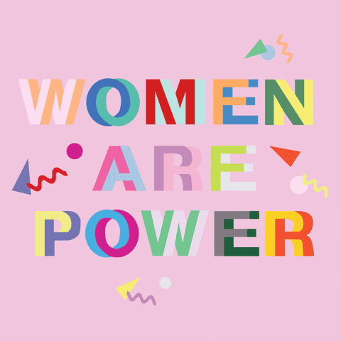

Whether you are talking to your friends or family, or advocacy organization, the most important way to advocate is to speak up. You can spread awareness and break barriers.
Supporting women and those that empower women, is essential to achieving gender equality. It can be as simple as you supporting women entrepreneurs in your community, you can make a difference
Youth activists around the world are stepping it up for gender equality. By empowering young advocates, and educating them about women's rights, we can ensure a better future for all.
By knowing your rights as a woman you are ensuring that these rights are not taken away from you or being ignored by society.
In 2017, we saw the power of social media campaigns in changing attitudes and raising awareness. By sharing your stories and amplifying the voices of others who do, you can make a difference.
Every woman and girl deserves the opportunity to live a life free from violence and discrimination. Your donation can help so many people.